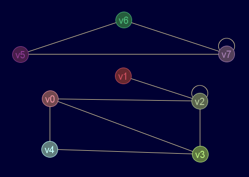

Descripción
Obtiene el camino entre dos nodos a partir de la matriz de distancias y la de caminos (pueden obtenerse con la función gr_floydwar)
Cadena de entrada
gr_camino
Cadena de salida
GRAFO.camino
Uso
gr_camino(<matriz_dist>,<matriz_cam>,<nodo1>,<nodo2>)
| Parámetros | |||
|---|---|---|---|
| # | Parámetro | Descripción | Valor por defecto |
| 1 | matriz_dist | Matriz de distancias | |
| 2 | matriz_cam | Matriz de caminos | |
| 3 | nodo1 | Extremo inicial del cámino (índice) | |
| 4 | nodo2 | Extremo final del camino (índice) | |
Valor devuelto
Ejemplos
gr_nuevo([[0,0,1,1,1,0,0,0],[0,0,1,0,0,0,0,0],[1,1,1,1,0,0,0,0],[1,0,1,0,1,0,0,0],[1,0,0,1,0,0,0,0],[0,0,0,0,0,0,2,1],[0,0,0,0,0,2,0,1],[0,0,0,0,0,1,1,1]],false,false,true,true)
Salida en JMEScriptGUI con visor de grafos v0.1:

gr_camino([[0,2,1,1,1,inf,inf,inf],[2,0,1,2,3,inf,inf,inf],[1,1,0,1,2,inf,inf,inf],[1,2,1,0,1,inf,inf,inf],[1,3,2,1,0,inf,inf,inf],[inf,inf,inf,inf,inf,0,1,1],[inf,inf,inf,inf,inf,1,0,1],[inf,inf,inf,inf,inf,1,1,0]],[[0,2,0,0,0,0,0,0],[2,1,1,2,0,1,1,1],[2,2,2,2,0,2,2,2],[3,2,3,3,3,3,3,3],[4,2,0,4,4,4,4,4],[5,5,5,5,5,5,5,5],[6,6,6,6,6,6,6,6],[7,7,7,7,7,7,7,7]],4,1)
VectorEvaluado: [4,0,2,1]
Camino entre los nodos 6 y 3:gr_camino([[0,2,1,1,1,inf,inf,inf],[2,0,1,2,3,inf,inf,inf],[1,1,0,1,2,inf,inf,inf],[1,2,1,0,1,inf,inf,inf],[1,3,2,1,0,inf,inf,inf],[inf,inf,inf,inf,inf,0,1,1],[inf,inf,inf,inf,inf,1,0,1],[inf,inf,inf,inf,inf,1,1,0]],[[0,2,0,0,0,0,0,0],[2,1,1,2,0,1,1,1],[2,2,2,2,0,2,2,2],[3,2,3,3,3,3,3,3],[4,2,0,4,4,4,4,4],[5,5,5,5,5,5,5,5],[6,6,6,6,6,6,6,6],[7,7,7,7,7,7,7,7]],6,3)
VectorEvaluado: Infinity
Véase también…
Desde / Última modificación
v0.6.2.0